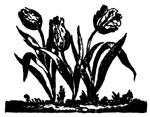
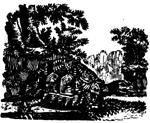

Conventional publishing wisdom claims that it's a mistake to run poetry in a "consumer" magazine. Although that may often be true, we're convinced that MOTHERS readers are the kind of people who look for beauty in the practical and search out practicality in the beautiful . . . and who realize that good poetry can be useful as well as inspiring. In fact, the best of poems can help us recognize the wonderful-and often wellhidden-similarities that all humans share . . . and, by doing so, can make each of us feel a little bit less alone. The poetry included in this occasional feature-be it brandnew or previously published, written by a recognized poet or a first-timer-will be material that, in the eyes of MOTHER's editors, helps us see ,ourselves in the words of others. It's that quality, and the fact that the work presented here will reflect the range of subject areas usually presented in this magazine, that gave this feature its name.
Revolutionary tulips pulled a coup d'etat Last night in my mother's garden. They came up from the Underground-Young and green, heads full of red. "What are the neighbors going to think When they see that we're aiding and abetting?" Maybe they'll put our names on a list Or throw us out of the garden club. I don't know.
Things have already started to change-My mother hung the laundry on a line today And I ran outside barefoot, in my housecoat. The woman next door looked at me as though I were crazy. Some people don't adapt as quickly as others.
- Linda Garrow
The gray, green distance of the hills and between them the deepening weight of shadow where they come to their waters, the hundred creeks and runs, the million stones and rushes.
Where they come to their waters come the hidden lives of hoof and feather, claw and antler, from burrow and nest, glade-rest and den. Where they come to their waters they come by the ancient signals, by silence and night, by sun-beat and season, in travel and migration, in heat and hunting.
But from here, only trees and the maze of hills all green-yellow in clear noon. Only trees: oak, ash, and lifting from a deep cove the tall cones of poplar. Only trees, except where cut deep in shade some hollow has earned a name: Hot, Lost, Painter, Grave.
Where they come to their waters is a hidden place, sun a shattered star in sea of leaves. Where they come to their waters. the night is alive and navigable by their language of hunger and song. But now, from here, only trees and distance, the distance by which I can only guess where they come, hidden by only trees, only hills, and this, the only world there used to be.
-Marc Harshman
Originally published by State Street Press in Turning Out the Stones, by Marc Harshman, and reprinted by permission of the poet.
Helen I was just in there telling Bob that I caught a turtle up to my place yesterday and I took it over to Laura to see if she didn't want it but she said she didn't have time to butcher it out and you know I don't think she's been feeling right up to it here this fall anyway Helen so she told me to take it up to Fraken's but I was saying to Bob ain't it something how you can cut that turtle's heart right out and throw it over in the corner and come back in ten hours and it'll still be beating away just as strong and why couldn't they put a heart like that in a fellow anyway Helen? you know somebody ought to tell these doctors that are all the time doing these transplants on people like they did this fellow last year that they ought to get a heart like that turtle's heart that'll keep on beating for ten hours even after it's been cut out and wouldn't that be something Helen? wouldn't that be some kind of a heart to put in a fellow anyway?
-Daniel J. Burke
Submissions to Fieldbook are welcomed. However, please take the time to look over what we've published. If you can't honestly say you can equal or better that body of work, don't send us anything. Furthermore, all unsolicited submissions should be sent without selfaddressed, stamped envelopes and should be addressed specifically to Fieldbook. We won't be returning or commenting on unused poems: Only those accepted for publication will be acknowledged.
|
 |
 |
|